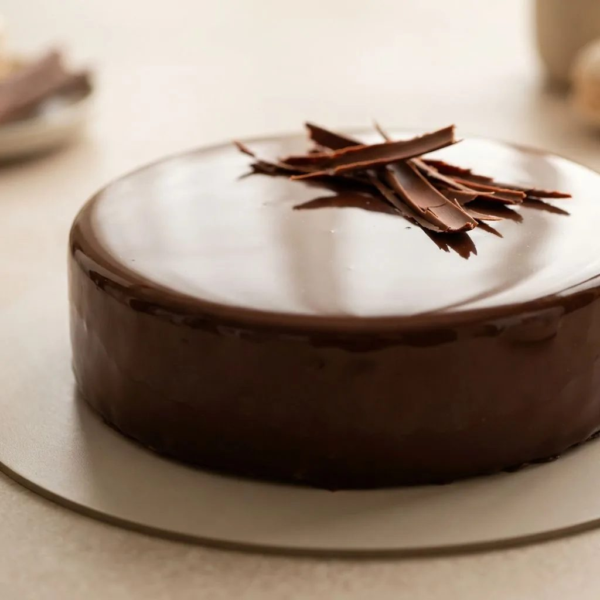

Glaçage miroir chocolat
Glaçage brillant pour entremets congelés, coulé à température précise.

Appareil
- Eau150 g
- Sucre300 g
- Glucose300 g
- Lait concentré sucré200 g
- Chocolat noir 55 %300 g
- Gélatine20 g
Étapes
- Cuisez eau, sucre et glucose à 103°C.
- Hors du feu, ajoutez le lait concentré puis la gélatine réhydratée.
- Versez sur le chocolat, attendez une minute, puis mixez tête immergée.
- Filmez au contact et reposez 12 heures au réfrigérateur.
- Réchauffez doucement à 35°C, mixez sans bulles, filtrez.
- Coulez à 30-35°C en une seule fois sur l'entremets sorti du congélateur.
Vous produisez en volume ?
4Cake fournit les professionnels de la pâtisserie au Maroc : chocolat, fruits secs, décors et matériel, avec tarifs et conditionnements grossiste.
Voir les tarifs grossiste